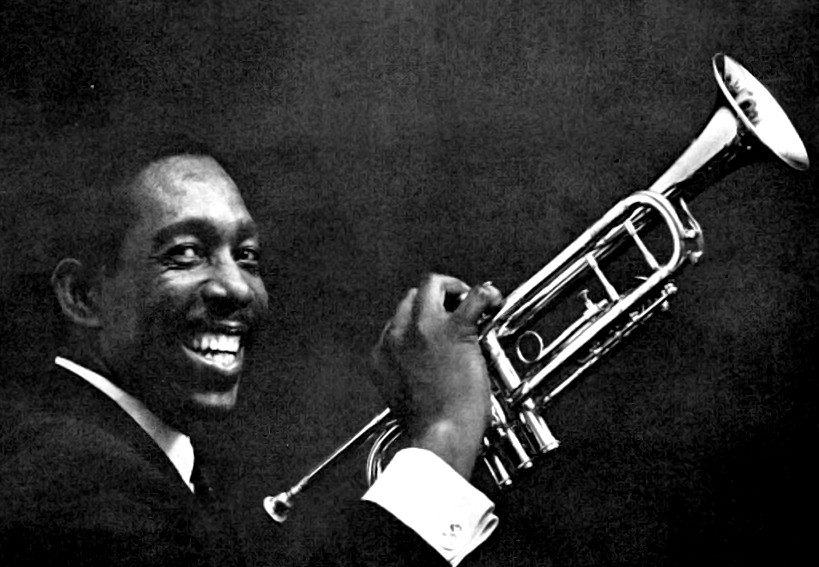
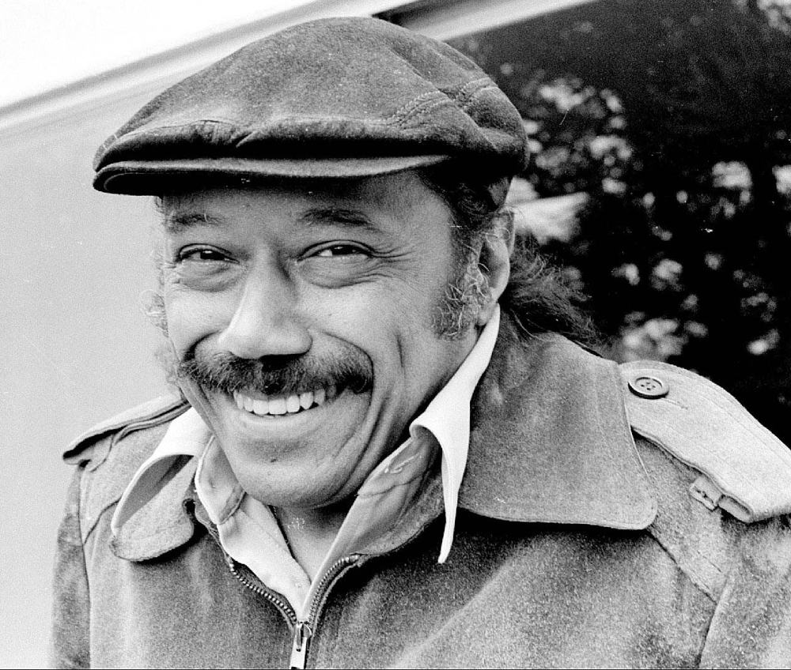

故事
他的專輯 Page One，唱片說明是一位前輩小號手寫的。他是薩克斯風手 Joe Henderson，在俄亥俄州長大，家裡有十四個孩子。1962 年，他在朋友家認識了小號手 Kenny Dorham。
Dorham 很照顧他，給了他很多建議。1963 年 Page One 發行，第一首就是 Dorham 寫的 Blue Bossa。這首曲子，後來成了學爵士的人幾乎都會練的曲子。

後來他加入 Horace Silver 的樂團，在 Song for My Father 吹了一段獨奏。1992 年，他錄了一整張 Billy Strayhorn 的曲子，拿下葛萊美獎。下次聽到 Blue Bossa，想想那位替他寫唱片說明的前輩。
故事後面
Joe Henderson 來自俄亥俄州的大家庭。小號手 Kenny Dorham 很照顧他，也替他的專輯 Page One 寫唱片說明。
Page One 第一首 Blue Bossa 是 Dorham 寫的，後來成了學爵士的人幾乎都會練的曲子。
他晚年錄了一整張 Billy Strayhorn 的曲子，拿下葛萊美獎，讓更多人重新認識他。

這樣聽
聽巴薩諾瓦的節奏，和兩支管樂一起吹出的主旋律。
逐句英文
The liner notes for his album Page One were written by an older trumpeter.
He was saxophonist Joe Henderson, raised in Ohio, one of fourteen children.
In 1962 he met trumpeter Kenny Dorham at a friend's house.
Dorham looked out for him and gave him plenty of guidance.
Page One came out in 1963, opening with Dorham's tune Blue Bossa.
That tune became one that nearly every jazz student practices.
He later joined Horace Silver's band and soloed on Song for My Father.
In 1992 he recorded an album of Billy Strayhorn tunes and won a Grammy.
Next time you hear Blue Bossa, think of the mentor who wrote his liner notes.
查證筆記與出處
「十四個孩子」為條目寫法。《Lush Life》一九九二年錄、得獎年份是一九九三年葛萊美，稿裡只寫拿下葛萊美。Blue Bossa 是 Page One 第一首：條目。
https://en.wikipedia.org/wiki/Joe_Henderson
https://en.wikipedia.org/wiki/Page_One_(Joe_Henderson_album)
https://en.wikipedia.org/wiki/Blue_Bossa
一分鐘影片版在 Instagram @jazz101tw。